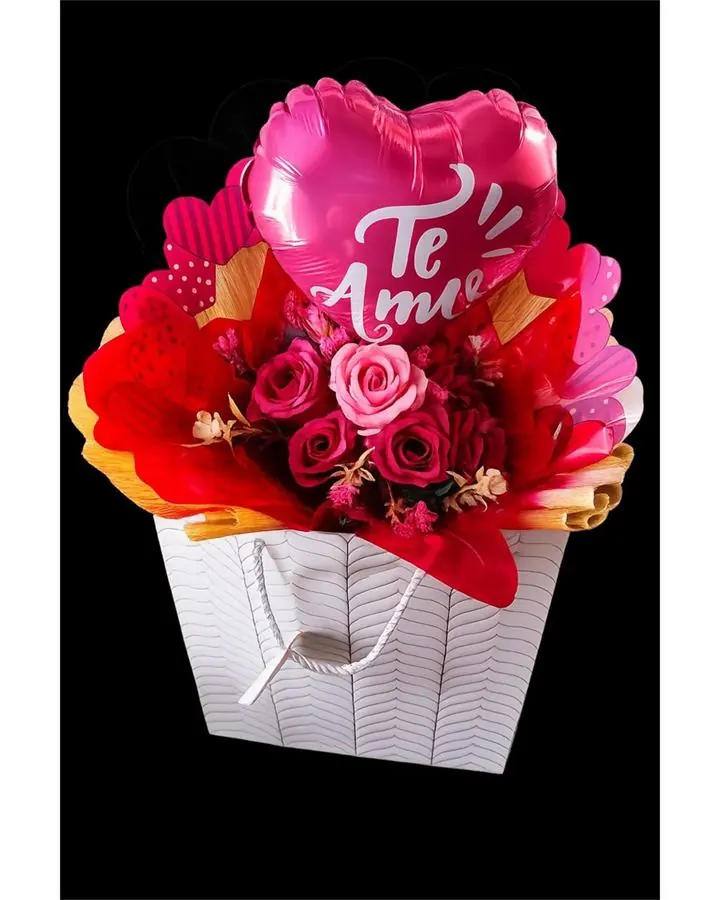

Palavras que acompanham o carinho
Mensagens para Cartão de Presente
Procurando a frase certa para acompanhar um presente? Na zona urbana de Canaã dos Carajás, a Zadoni monta sua cesta ou buquê com a mensagem escolhida e entrega com embalagem de presente inclusa. Para as vilas, aceitamos encomendas com 24 horas de antecedência.
Às vezes, uma frase simples diz exatamente o que importa. Encontre inspiração para seu cartão e leve a mensagem junto ao pedido de sugestões.
Está em Canaã dos Carajás? Escolha a sua mensagem aqui e envie junto com um buquê ou uma cesta da Zadoni, com embalagem de presente inclusa e entrega na cidade.
Canaã dos Carajás · PA
Presentes por encomenda e retirada agendada. Consulte disponibilidade para entrega.

Natal: mensagem e presente com entrega em Canaã
Escolha uma das mensagens de Natal para cartão e envie junto com o presente. Veja os presentes de Natal com preço em Canaã dos Carajás: cestas, caixas e mimos com embalagem de presente inclusa.
Escolha uma mensagem que pareça sua
São sugestões originais e curtas. Você pode usar como estão ou escrever sua própria versão no formulário. Acrescente o nome de quem recebe e assine do seu jeito.
Frases por destinatário, com o presente certo em Canaã
Três frases curtas para cada pessoa especial, com a sugestão de presente e o botão para pedir pelo WhatsApp.
Não sabe o que escolher? Responda poucas perguntas e receba a sugestão de presente. Começar agora
Quer uma carta escrita sob medida?
Para declarações longas, pedidos de desculpas ou histórias que pedem mais do que uma frase, conte a situação pelo WhatsApp e a nossa equipe ajuda você a montar o texto da carta, do seu jeito.
A carta acompanha o presente com embalagem inclusa.
Como deixar o cartão mais pessoal
Troque uma frase genérica por um detalhe verdadeiro: uma conversa, um cuidado ou um desejo para o próximo ano. Em pedidos de desculpas, reconheça sua atitude sem cobrar uma resposta. Confirme com a Zadoni o formato do cartão e o espaço para o texto.
Para combinar a frase com o gesto, veja o Guia para Escolher o Presente Certo, explore presentes para namorada ou consulte as cestas de aniversário. Para a época de fim de ano, veja ideias de presentes de Natal.
Adicione um cartão com sua frase escrita à mão
Escolha a frase e a Zadoni escreve à mão no cartão que vai junto com o presente. Combine o texto pelo WhatsApp.
Monte o seu cartão
Escolha a ocasião e a frase, coloque os nomes e veja como o cartão fica. Nada do que você digita aqui fica salvo no navegador.
Resumo do pedido
O destinatário não verá o seu nome. A equipe da Zadoni conversa com você pelo WhatsApp e não revela quem enviou.
Confira os nomes e a frase. Nós confirmamos o pedido e o valor pelo WhatsApp.
Enviar pedido pelo WhatsAppEncontre o Presente Certo 💝
Já escolheu a frase? Complete os detalhes em um só formulário. As respostas ficam nesta página até você decidir enviá-las.
A Zadoni vai sugerir opções pelo WhatsApp depois de receber seu resumo. Você também pode pedir orientação agora sem responder às perguntas.
Sugestões por destinatário
Depois de responder, o resumo indica a página certa. Para ver direto:
- Presentes românticos: namorada, esposa, namorado ou surpresa romântica.
- Buquês de flores: para a mãe ou para quem ama flores.
- Cestas de aniversário: para qualquer aniversariante.
- Cestas de café da manhã: para começar o dia com carinho.
- Cestas de presente: para amigo, amiga, colega ou família.
- Presentes de Natal: cestas, caixas e mimos de fim de ano.
Resumo para a Zadoni
Enviar resumo pelo WhatsAppO envio é uma consulta. Composição, valor, data e disponibilidade serão confirmados no atendimento.
Presente com cartão em Canaã dos Carajás
Escolheu a frase? A Zadoni monta o presente com o seu cartão, com embalagem de presente inclusa, e entrega em Canaã dos Carajás.
- Atendimento todos os dias, das 6h às 23h30.
- Entrega de segunda a domingo, em horário combinado com você. Taxa de R$ 10,00 na zona urbana de Canaã dos Carajás; para outras localidades, consulte pelo WhatsApp.
- Pagamento em dinheiro, Pix, cartão de crédito parcelado, link de pagamento ou cartão por aproximação.
- Prefere buscar? Retire na loja: Rua Asdrúbal Bentes, 453, Centro.
Dúvidas frequentes
Posso mudar as frases sugeridas?
Sim. Use uma sugestão ou escolha “Escrever minha mensagem” no formulário para criar seu texto. Uma lembrança pessoal ajuda a deixar o cartão com a sua voz.
O texto escolhido já vai impresso no cartão?
Não automaticamente. A mensagem segue no resumo do WhatsApp para você confirmar com a Zadoni o texto, o formato e a possibilidade de incluir o cartão.
Preciso escolher o presente antes da mensagem?
Não. Você pode começar pelo cartão e pedir ajuda para escolher um presente de acordo com a pessoa, a ocasião e sua faixa de investimento.
O cartão é impresso ou escrito à mão?
Os dois são possíveis. O cartão pode ser impresso ou escrito à mão, conforme combinado individualmente com a Zadoni pelo WhatsApp.
Vocês entregam em Canaã dos Carajás?
Sim, entregamos em toda a zona urbana da cidade.
E nas vilas?
Sim, com 24 horas de antecedência. Chame no WhatsApp para combinar.
Dá para retirar na loja?
Sim, na Rua Asdrúbal Bentes, 453, Centro.
Qual o prazo de entrega?
A embalagem de presente está incluída?
Sim.
Continue escolhendo com carinho
Mensagens de Natal para cartão de presente
Frases curtas para escrever no cartão ou mandar junto com o presente. Troque os nomes e assine do seu jeito.
Quer enviar a mensagem junto com um presente? Em Canaã dos Carajás, a Zadoni entrega buquês, cestas e presentes de Natal com embalagem inclusa. Veja também os buquês em Canaã dos Carajás.
Mora em Canaã dos Carajás? A Zadoni entrega o presente com a sua mensagem: conheça a nossa floricultura em Canaã dos Carajás.